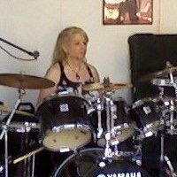
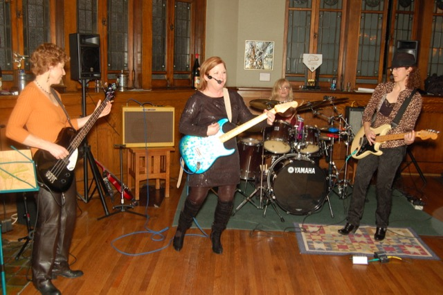
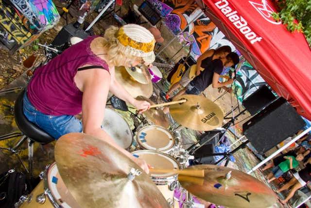
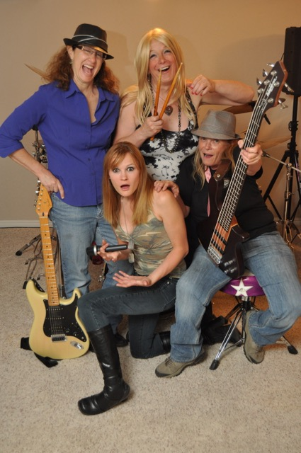
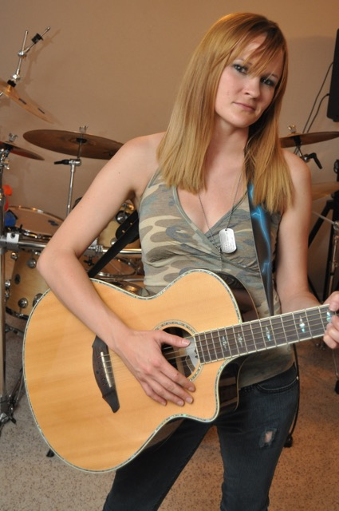

I've been playing drums off and on since high school. However it was only when I renewed my interest in playing in 2006 that I actually joined bands. From 2006 until 2013 I was nearly continuously engaged in forming and practicing with bands, with a few cherished performances scattered here and there. This is just a taste of my band herstory. Enjoy :)
A friend went with me to support me while I auditioned for this band. That's where I met Chris DeCaria, with whom I would collaborate with in 2 other bands after this one. Here is a link to a wiki page about the song, Cherry Bomb
Chris brought me into my next band which we named Stella!!!. We had a lot of fun playing together. We practiced a lot, and practiced performing at a club in O-Town every week for a while. We have the notoriety of becoming the very first all-female rock band to ever perform at the Alta Club in downtown SLC. Here is a link to a wiki page about the Alta Club
The last band I was in as drummer. We named it the Garage Fire Band after... (remember when The Garage On Beck caught on fire? Well, we needed a name for our band and then that happened and boom!)Slug Magazine covered the LadyFest which included mention of our band.. yay :)
We had a lot of fun doing this photo shoot. This is just one of my favorite pics from this session. We never got invited to perform at Garage on Beck after we named our band after this fire.
I've oened a few guitars. This one is my favorite! Here is a link to information about a newer version of my guitar.
